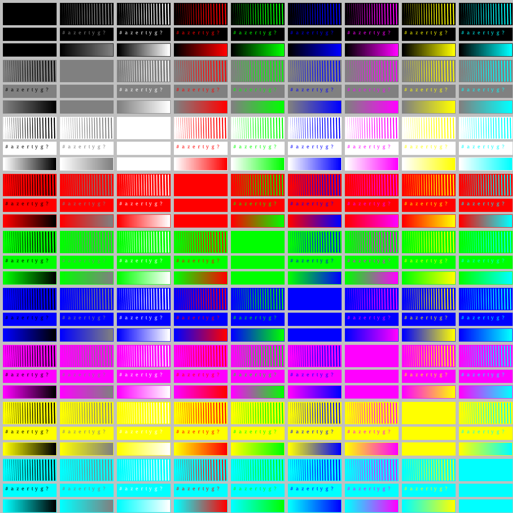
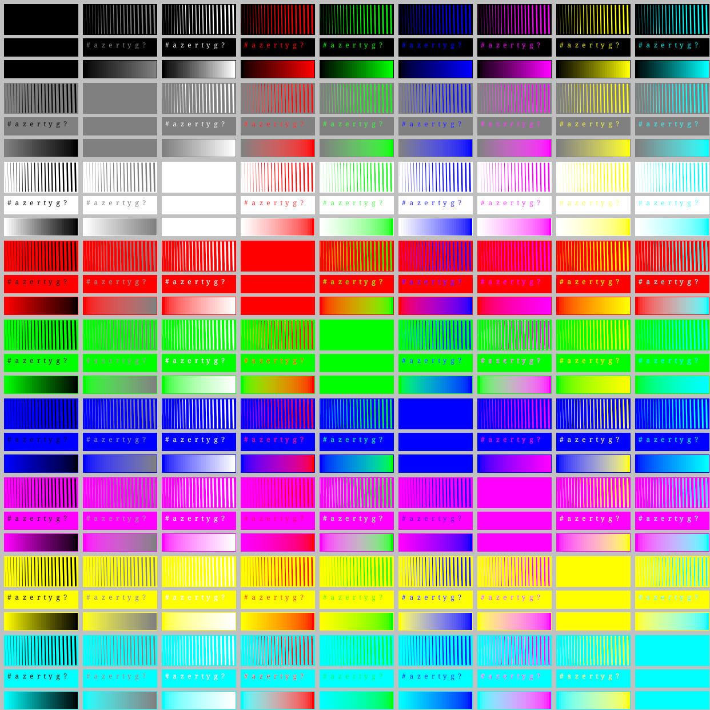
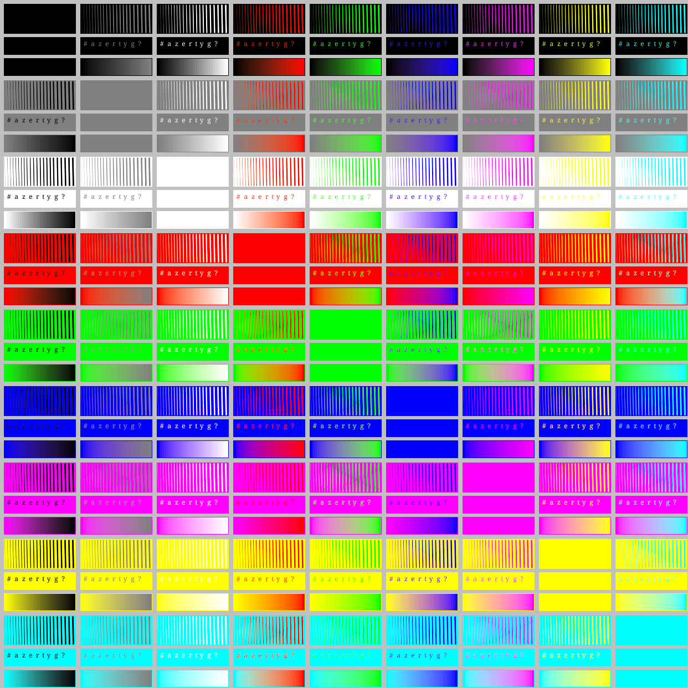
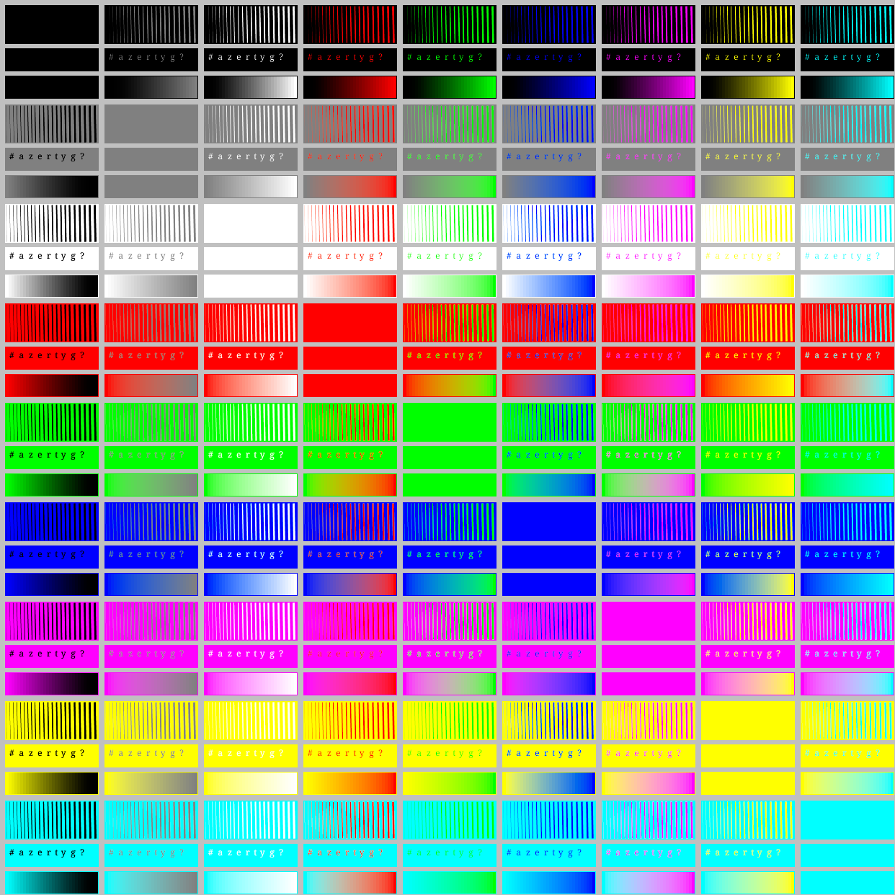

This page presents the different alpha blending methods implemented in the Marlin renderer's new Compositor.
This new compositor is developped in the unsafe-dev branch, see the pipe package.
This images are produced by the LineWidthColorGridTest class and stored in the PNG format (sRGB INT RGBA format).
This page compares sRGB color mixing (perceptual mode) with CIE Lab and OK Lab perceptual color spaces.
See OK Lab page for more details.
Notes:
| Original Java2D approach | Gamma-corrected sRGB (linear) with perceptual mode: contrast correction on all shades (L*) |
|---|---|
|  |  |
| Original Java2D approach | Gamma-corrected sRGB - CIE Lab |
|---|---|
|  |
| Original Java2D approach | Gamma-corrected sRGB - Ok Lab |
|---|---|
|  |